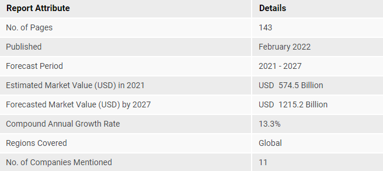

Market Overview
Key Market Trends
Competitive Landscape
Major Players
Table Of Content
Methodology
FAQs
Let Us Hear About Your Requirements
Submit Your Request For Proposal
The market for aviation infrastructure market is anticipated to witness a CAGR of about 7% during the forecast period. The increase in the expansion plans for existing airports as well as the growing demand regarding construction of smart airports, are some of the factors which shall drive the market in the coming years.
The booming aviation sector, as well as the rise in the number of air travelers, in the present scenario, have to various airport operators coming up with newer expansion plans and strategies, to accommodate the growing number of passengers. Furthermore, in the present scenario, the airport operators are facing immense challenges related to airport expansion.
The increase in the expansion plans for existing airports as well as the growing demand regarding construction smart airports, are some of the factors which shall drive the market in the coming years.

Key Market Segmentation:
The publisher provides an analysis of the key trends in each sub-segment of the global mother and child healthcare market, along with all the forecasts at the global, regional and country level from 2022-2027. Our report has categorized the market based on services, maternal age and location.
Significant growth in the healthcare industry is one of the key factors creating a positive outlook for the market. MCH widely adopted by parents to seek consultation from super-specialist doctors and ensure the good health of both mother and child. Additionally, the widespread adoption of MCH services by pregnant women due to insufficient or no availability of prenatal care and delivery without assistance from appropriately trained health care providers is favoring the market growth. Moreover, the development of various nutritional and micronutrient supplementation all of strategies that include zinc, calcium, iron and early prenatal food supplementation is providing a thrust to the market growth.
These supplements provide essential nutrients in the required quantities and protect the mother and child from infections and diseases. With this, the easy availability of digitized claim processing and healthcare policy management solutions is positively impacting the market growth. Other factors, including the increasing number of women suffering from immunodeficiency virus and other chronic illnesses, with the implementation various government initiatives to improve public health, are anticipated to drive the market toward growth.
South America Swine Feed Market Trends:
This section covers the major market trends shaping the South America Swine Feed Market
according to our research experts:
Among the South American countries, Brazil leads to pig production. According to FAO, Brazil's pig stocks went up from 40 million heads in 2016 to 41.4 million heads in 2018. Also, Argentina's pig stocks increased from 5.1 million heads in 2016 to 5.6 million heads in 2018. Pork is cheaper than other meat sources which are a major factor for its high consumption. In Addition, its palatability, fat content, and texture fascinates the consumer. A large middle -class population and changing consumer preference are levitating the pork demand. Thus increased popularity of pork meat in the region is likely to drive the market for swine feed in the forecast period.
Competitive Landscape:
The competitive landscape of the industry has also been examined along with the profiles of the key players being Ann & Robert Lurie Children's Hospital, Apollo Hospitals Enterprise Ltd., Arrowhead Regional Medical Center, Carle Foundation Hospital, ChristianaCare Christiana Hospital, Cincinnati Children's Hospital, Cleveland Clinic Institute, Cloudnine Group of Hospitals, King Faisal Specialist Hospital & Research Centre, Riley Hospital and The Jorvi Hospital. 
South America Swine Feed Market Leaders:
South America Swine Feed Market Report - Table of Contents
- INTRODUCTION
- 1.1 Study Deliverables
- 1.2 Study Assumptions
- 1.3 Scope of the Study
- RESEARCH METHODOLOGY
- EXECUTIVE SUMMARY
- MARKET DYNAMICS
- 4.1 Market Overview
- 4.2 Introduction to Market Drivers and Restraints
- 4.3 Market Drivers
- 4.4 Market Restraints
- MARKET SEGMENTATION
- 5.1 Ingredient Type
- 5.1.1 Cereals
- 5.1.2 Cereals by-products
- 5.1.3 Oil Seed Meal
- 5.1.4 Oils
- 5.1.5 Supplements
- 5.1.6 Others
- 5.2 Supplement Type
- 5.2.1 Vitamins
- 5.2.2 Amino Acids
- 5.1 Ingredient Type